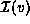
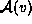
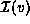
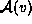
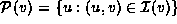
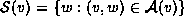
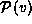
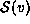

Data Structures and Algorithms
with Object-Oriented Design Patterns in Java
Data Structures and Algorithms
with Object-Oriented Design Patterns in Java
Program  also declares four methods
each of which returns an Enumeration.
The getIncidentEdges method returns an Enumeration that enumerates
the elements of the .
Similarly, the getEmanatingEdges method returns an Enumeration
that enumerates the elements of .
also declares four methods
each of which returns an Enumeration.
The getIncidentEdges method returns an Enumeration that enumerates
the elements of the .
Similarly, the getEmanatingEdges method returns an Enumeration
that enumerates the elements of .
The getPredecessors method returns an Enumeration that enumerates the elements of  and the getPredecessors method returns an Enumeration that enumerates . The elements of  and  are vertices whereas the elements of and are edges.
 Copyright © 1998 by Bruno R. Preiss, P.Eng. All rights reserved.
Copyright © 1998 by Bruno R. Preiss, P.Eng. All rights reserved.